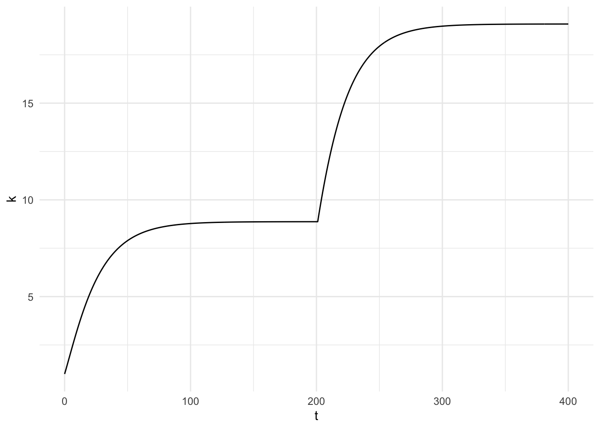
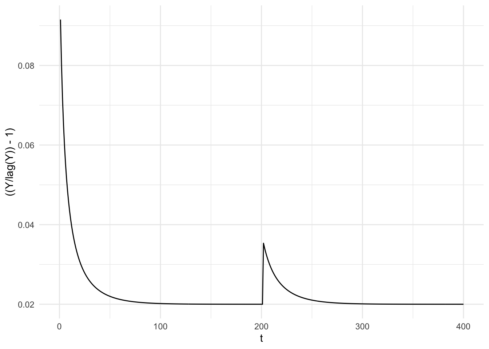
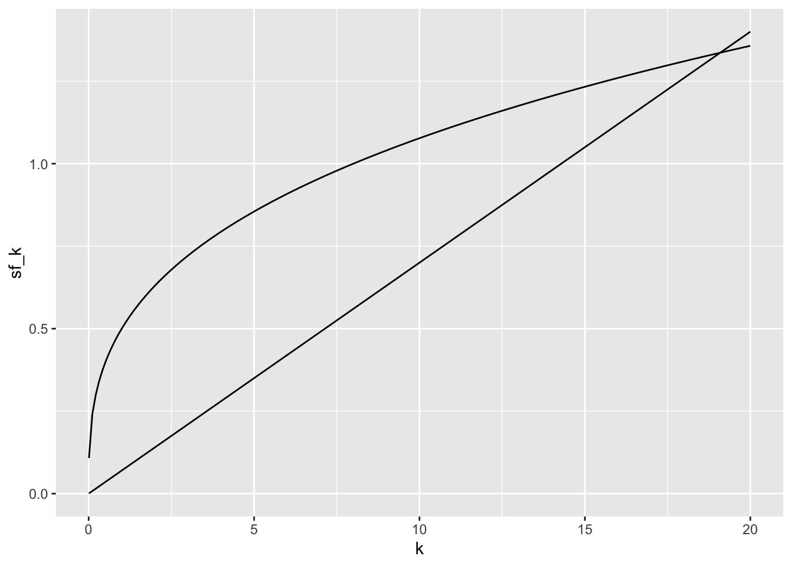

rm(list = ls())
graphics.off()
cat("\014")Solow Growth Model
library(tidyverse)── Attaching core tidyverse packages ──────────────────────── tidyverse 2.0.0 ──
✔ dplyr 1.2.1 ✔ readr 2.2.0
✔ forcats 1.0.1 ✔ stringr 1.6.0
✔ ggplot2 4.0.3 ✔ tibble 3.3.1
✔ lubridate 1.9.5 ✔ tidyr 1.3.2
✔ purrr 1.2.2
── Conflicts ────────────────────────────────────────── tidyverse_conflicts() ──
✖ dplyr::filter() masks stats::filter()
✖ dplyr::lag() masks stats::lag()
ℹ Use the conflicted package (<http://conflicted.r-lib.org/>) to force all conflicts to become errorslibrary(plotly)
Attaching package: 'plotly'
The following object is masked from 'package:ggplot2':
last_plot
The following object is masked from 'package:stats':
filter
The following object is masked from 'package:graphics':
layout# Parameters
alpha <- 1/3
s <- 0.3
n <- 0.02
delta <- 0.05
# Initial value
K0 <- 100
L0 <- 100
# Period
Tmax <- 400state0 <- tibble(
t = 0, L = L0, K = K0, Y = (K0^alpha)*(L0^(1-alpha)),
L_dot = n*L0, K_dot = s*Y - delta*K0,
I = s*Y, C = (1-s)*Y,
k = K0/L0, y = Y/L0
)
step_function <- function(state, t) {
# This period's stock = previous stock + previous change
L <- state$L + state$L_dot
K <- state$K + state$K_dot
# This period's flow, computed from THIS period's stock
Y <- (K^alpha)*(L^(1-alpha))
I <- s*Y
C <- (1-s)*Y
# Change of stock, also from THIS period's stock (leads into t+1)
L_dot <- n*L
K_dot <- s*Y - delta*K
# ratio
k <- K/L
y <- Y/L
tibble(t, L, K, L_dot, K_dot, Y, I, C, k, y)
}
path_list <- accumulate(1:Tmax, step_function, .init = state0)Given there is a shock/ change in parameters along the way
s <- 0.3
path_1 <- accumulate(1:200, step_function, .init = state0)
s <- 0.5 # <- new parameter value(s) after t = 200
path_2 <- accumulate(201:Tmax, step_function, .init = path_1[nrow(path_1), ])
path_list <- bind_rows(path_1, path_2 %>% slice(-1))path_list |>
ggplot(aes(x = t, y = k)) +
theme_minimal() +
geom_line()
path_list |>
ggplot(aes(x = t, y = ((Y/ lag(Y))-1))) +
geom_line() +
theme_minimal()Warning: Removed 1 row containing missing values or values outside the scale range
(`geom_line()`).
path_list |>
plot_ly(x = ~t, y = ~k, type = "scatter", mode = "lines")Solow Diagram
solow_df <- tibble(
k = seq(0.01, 20, length.out = 200),
sf_k = s * k^alpha,
break_even = (n + delta) * k
)
solow_df |>
ggplot(aes(x = k)) +
geom_line(aes(y = sf_k)) +
geom_line(aes(y = break_even))
solow_df |>
plot_ly(x = ~k) |>
add_trace(y = ~sf_k, mode = "lines") |>
add_trace(y = ~break_even, mode = "lines")No trace type specified:
Based on info supplied, a 'scatter' trace seems appropriate.
Read more about this trace type -> https://plotly.com/r/reference/#scatter
No trace type specified:
Based on info supplied, a 'scatter' trace seems appropriate.
Read more about this trace type -> https://plotly.com/r/reference/#scatter